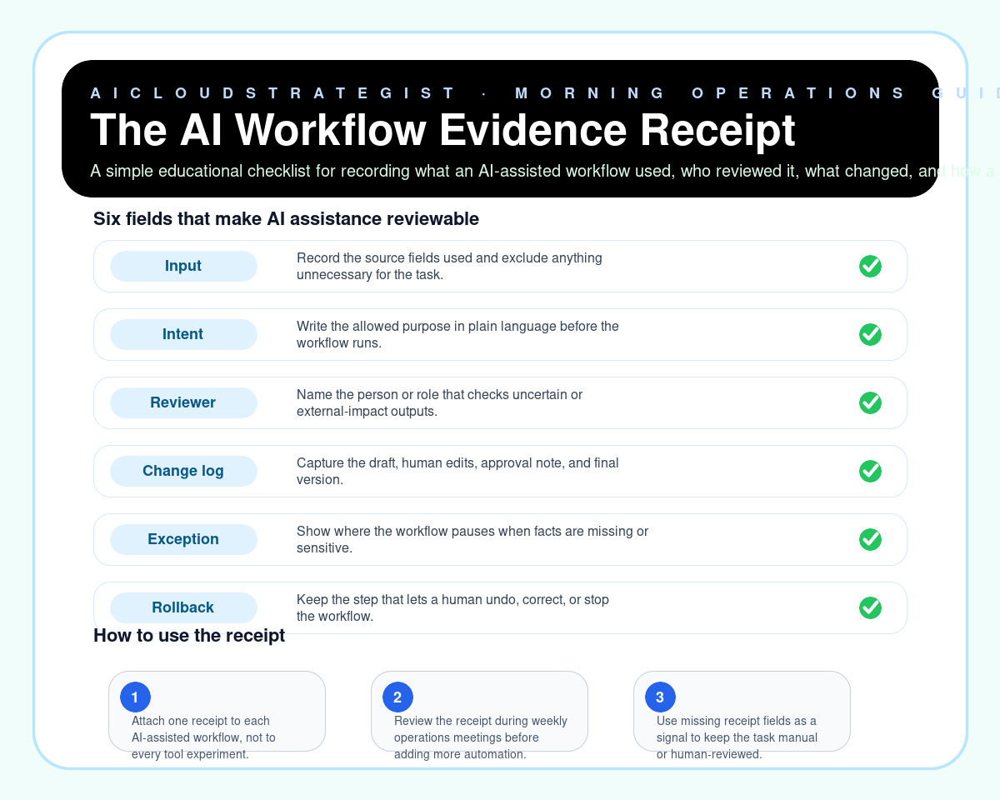

Morning publication · AI operations evidence
The AI Workflow Evidence Receipt
A simple educational checklist for recording what an AI-assisted workflow used, who reviewed it, what changed, and how a human can reverse it.

Six receipt fields
- Input: Record the source fields used and exclude anything unnecessary for the task.
- Intent: Write the allowed purpose in plain language before the workflow runs.
- Reviewer: Name the person or role that checks uncertain or external-impact outputs.
- Change log: Capture the draft, human edits, approval note, and final version.
- Exception: Show where the workflow pauses when facts are missing or sensitive.
- Rollback: Keep the step that lets a human undo, correct, or stop the workflow.
How to use it
- Attach one receipt to each AI-assisted workflow, not to every tool experiment.
- Review the receipt during weekly operations meetings before adding more automation.
- Use missing receipt fields as a signal to keep the task manual or human-reviewed.
Truth boundary
Educational workflow only — not legal, compliance, medical, financial, security, certification, savings, ranking, revenue, booking, or guaranteed-performance advice.